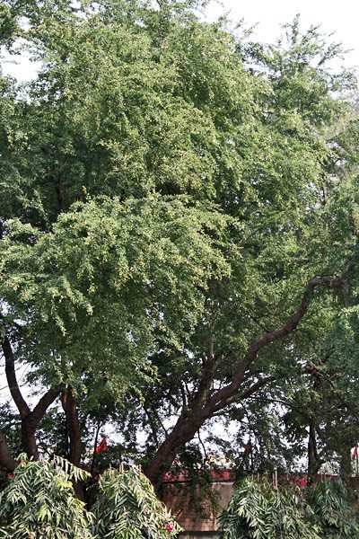

जंगल जलेबीJungle Jalebi
Pithecellobium dulce · Fabaceae · FLR-0193

- Scientific name वैज्ञानिक नाम
- Pithecellobium dulce (Roxb.) Benth.
- Family कुल
- Fabaceae
- Hindi हिंदी
- जंगल जलेबी
- Local names स्थानीय नाम
- jangli jalebi, jungle jalebi, jalebi, vilayati imli, manila tamarind
- Status here यहाँ की स्थिति
- naturalized
- Movement आवागमन
- Resident, here all year
- IUCN IUCN
- LC
- Review समीक्षा
- audited and independently read
When to look कब देखें
Present all year. साल भर मौजूद।
Uses and possibilities उपयोग और संभावनाएँ
Drawn from the documented uses in the profile below, where each is labelled traditional, current or a research lead. All uses →
Tell it apart from इनसे अलग पहचानें
जंगल जलेबी / Jungle Jalebi
Pithecellobium dulce (Roxb.) Benth. — Fabaceae
जंगल जलेबी — दक्षिण-पूर्व एशिया का एक तेज़ी से बढ़ने वाला, कांटेदार झाड़ी सा पेड़ है जो अब पूरे भारत में, खासकर परती और बेकार जमीन पर, आम हो गया है। पूर्वी उत्तर प्रदेश में यह बस्ती जिले की सड़कों के किनारे, खेतों की मेड़ों पर, और गाँवों के बाहर की बंजर जमीन पर सैकड़ों की तादाद में पाया जाता है। इसके फूल नरम, पीले, सुगंधित होते हैं और मधुमक्खियों को बहुत आकर्षित करते हैं। फल एक गुंथी हुई फली होती है जो जलेबी जैसी दिखती है (इसीलिए नाम जंगल जलेबी), और जब पक जाती है तो हल्की भूरी होकर मीठी हो जाती है। यह विदेशी प्रजाति है और स्थानीय वनस्पतियों के लिए हानिकारक मानी जाती है।
Quick Identification त्वरित पहचान
| Feature | Description |
|---|---|
| Size | Deciduous to semi-evergreen shrub or small tree, 3–10 m, dense branching |
| Leaves | Bipinnate (compound), 10–20 cm, numerous small leaflets, sensitive |
| Spines | Sharp, curved, paired at nodes, 0.5–1.5 cm |
| Flowers | Small, pale yellow, fragrant, in dense clusters, February–May |
| Fruit | Coiled or twisted legume (pod), 7–15 cm, flat, brown, sweet pulp |
| The test | Curved spines, bipinnate folding leaves, coiled brown sweet pods |
Field tip: Look along roadsides and wastelands in May–July for the distinctive coiled brown pods and dense spiny branches. The plant spreads rapidly and forms thickets. The flowers are fragrant and appear before the monsoon.
हिंदी — कैसे पहचानें: कांटेदार पेड़, जटिल पत्तियाँ जो छूने से मुड़ जाती हैं, पीले सुगंधित फूल, जलेबी जैसी गुंथी फली।
Morphology आकारिकी
Biometrics (naturalized trees, northern India):
| Measurement | Range |
|---|---|
| Height | 3–10 m |
| Trunk diameter | 10–40 cm |
| Leaf length | 10–20 cm |
| Leaflet | 3–8 × 1–3 mm (many per leaf) |
| Flower diameter | 5–10 mm |
| Pod length | 7–15 cm |
| Pod width | 1–1.5 cm |
Trunk and bark: Usually multiple stems from base, bark brown-grey, smooth on young stems, becoming fissured. Wood hard, pale.
Leaves: Bipinnate (doubly compound), with 6–12 pairs of pinnae, each pinna bearing numerous small leaflets 3–8 mm long. The leaves are sensitive and fold when touched or in shade. Rachis (main axis) slightly winged.
Spines: Modified stipules (leaf-base structures), paired at each node, curved, 0.5–1.5 cm long, sharp, often reddish.
Flowers: Small, 5–10 mm diameter, borne in dense terminal or axillary clusters (racemes). Pale yellow or cream, very fragrant, especially in early morning. Calyx and corolla five-lobed each; numerous stamens in a group. Flowers February–May; actively visited by bees.
Fruit (legume): The pod is flattened, 7–15 cm long, 1–1.5 cm wide, and characteristically coiled or twisted like a jalebi (Indian sweet). The pod wall is hard and brown when mature, with a thick sweet brown pulp surrounding the hard seeds. Each pod contains 2–5 seeds.
हिंदी: जटिल पत्तियाँ, हल्के हरे रंग की, छूने से मुड़ जाती हैं। फूल पीले, सुगंधित, पुष्प गुच्छे। फली गुंथी हुई, मीठी गूदा।
Behaviour & Ecology व्यवहार और पारिस्थितिकी
A native of Central America, introduced to Asia in the 18th century, now naturalized throughout tropical Asia including India. In Basti, it is an aggressive pioneer species that rapidly colonizes wastelands, roadsides, and abandoned fields. It is drought-tolerant, nitrogen-fixing (as a legume), and tolerant of poor, degraded soils. Growth is rapid, and a single tree can produce many seedlings spread by birds and animals. The tree forms dense thickets that crowd out native vegetation.
Flowers are visited intensively by Asian Honey Bee and other bees. Ripe pods are eaten by cattle, goats, and wildlife including Common Myna and parakeets. Seeds are dispersed by animals consuming the fruit and by wind.
हिंदी: यह विदेशी पेड़ है जो तेज़ी से फैलता है। बंजर जमीन पर पहले उग आता है। भारतीय पेड़ों को दबा देता है। मधुमक्खियों के लिए खाना देता है।
Life Cycle / Phenology जीवन चक्र
| Month / season | Event |
|---|---|
| January–February | Leaf flush (if winter dormancy occurs) |
| February–May | Flowering (intense in March–April) |
| May–July | Pod ripening (brown color indicates maturity) |
| July–September | Pod fall and seed dispersal |
| 2–3 years from seed | Full reproduction capacity |
Germination is rapid once pods are mature. Seeds are hard-coated and may require scarification for faster germination. Can produce multiple crops per year in ideal conditions.
हिंदी: फरवरी-मई में फूल, सुगंधित। मई-जुलाई में फली पकती है। बीज जल्दी उगते हैं, बहुत तेज़ी से फैलता है।
Associated Species / Interactions संबंधित प्रजातियाँ
- Pollinators: Asian Honey Bee, other bees, and insects heavily visit flowers.
- Fruit dispersers: Livestock (cattle, goats, sheep), Common Myna, parakeets.
- Ecological impact: Displaces native species in degraded areas; forms monoculture thickets.
Pests and Diseases कीट और रोग
- Relatively free of serious pests.
- Occasional leaf-eating caterpillars; rarely cause damage.
- Pod borers attack developing pods but damage is minor.
- No significant fungal diseases reported in India.
- Hardy against drought and heat stress.
Agricultural / Human Relevance कृषि प्रासंगिकता
Traditional use:
The sweet pods are eaten as a snack, and the sweet pulp is used in some traditional sweet preparations. In some regions, the pods are used as livestock fodder.
Today: Jungle jalebi is widespread in Basti but rarely cultivated deliberately. Its pods are eaten opportunistically by livestock and by people passing through fields. The tree is considered a troublesome invasive species by many agricultural institutions.
Concerns: The plant is listed as invasive in several parts of India, as it rapidly colonizes wastelands and degraded areas, forming dense thickets that exclude native vegetation. Its nitrogen-fixing ability helps it outcompete local species on poor soils. Mechanical removal is difficult due to regeneration from roots and seeds.
Potential benefits: The flowers are excellent for bees, the tree fixes nitrogen and improves degraded soils, and the pods provide emergency fodder in times of scarcity. Some researchers suggest sustainable harvesting rather than eradication.
हिंदी: फली मीठी, खा सकते हैं। मवेशियों को चारा भी देते हैं। लेकिन यह विदेशी प्रजाति है और स्थानीय पेड़ों को दबा देती है। झाड़ी हटाना मुश्किल है।
Expected Locally स्थानीय रूप से अपेक्षित
Not a field record. Written from published accounts for eastern Uttar Pradesh. No confirmed local sighting yet — if you have seen it, that is what the atlas needs.
अभी तक स्थानीय पुष्टि नहीं। यह विवरण प्रकाशित स्रोतों से है, किसी अवलोकन से नहीं।
Very likely to be found in Basti district along roadsides, in wastelands, and in disturbed areas, especially in towns and villages. The plant is becoming increasingly common and forms dense thickets. The fragrant flowers in February–May and the distinctive coiled pods in May–July are the best times to find and record it.
Distribution वितरण
Global range: Native to Central America; introduced to Asia in 18th century; now pantropical and naturalized throughout India.
In India: Widespread in tropical and subtropical regions; increasingly common in wastelands and degraded areas.
In Uttar Pradesh: Present in all districts, particularly common in eastern plains.
In Basti district / eastern UP: Abundant in roadsides, wastelands, field margins, and village outskirts; increasingly forms pure stands.
Research Questions शोध प्रश्न
Anyone can investigate these | कोई भी इन प्रश्नों की जाँच कर सकता है
- How rapidly does a single jungle jalebi plant spread in abandoned fields, and what percentage of seeds germinate? — Mark a field and return monthly.
- Which insects visit the flowers, and for how long do the flowers remain open? — Observe flowers from sunrise to sunset.
- Can the pods be harvested and dried for long-term storage as livestock feed? — Test drying and storage methods.
- Does mechanical removal of plants (cutting) lead to regrowth from roots? — Cut a plant and monitor regrowth.
- What is the sweetness level and nutritional composition of the pod pulp? — Laboratory analysis (if accessible).
Similar Species मिलती-जुलती प्रजातियाँ
| Species | How to tell apart | हिंदी | |
|---|---|---|---|
| eekar (Acacia nilotica) / बबूल | Smaller leaflets; yellow flower balls; white thorns; different family | पत्तियाँ छोटी, पीले फूलों की गेंदें, सफेद कांटे | |
| [[tamarind\ | Tamarind]] (Tamarindus indica) | Leaflets larger (8–12 mm); longer pod (15–20 cm); not coiled; different family | फली लंबी, सीधी, गुंथी नहीं |
| Neem (Azadirachta indica) | Leaflets larger; flowers small, white, in loose clusters; fruit different | पत्तियाँ बड़ी, सफेद फूल, अलग फल |
Field rule: A rapidly spreading spiny shrub with bipinnate leaves that fold when touched, fragrant pale yellow flowers, and distinctive coiled brown sweet pods is jungle jalebi; it forms impenetrable thickets along roadsides.
Taxonomy & Classification वर्गीकरण
Original description. William Roxburgh described this species as Mimosa dulcis in 1832. George Bentham transferred it to Pithecellobium in 1844. The genus Pithecellobium is derived from Greek pithekos (ape) and kellobion (small acorn), referring to the appearance of the fruit to a monkey's ear. The species name dulce means sweet, referring to the pod pulp.
Subspecies. Monotypic — no subspecies are currently recognised.
Family and order placement. Fabaceae (legume family), subfamily Mimosoideae, order Fabales.
Phylogenetic notes. Pithecellobium is a genus of tropical trees with distinctive coiled or twisted pods; P. dulce is one of few species that have become pantropical.
IUCN status rationale. Evaluated as Least Concern (LC). Widespread; naturalized globally; expanding range.
Photo Gallery फोटो गैलरी
Photos needed आवश्यक फोटो
- [ ] Whole plant / thicket (पूरा पौधा / झाड़ी)
- [ ] Flowers in clusters (फूलों के गुच्छे)
- [ ] Ripe coiled pods (पकी गुंथी हुई फली)
No photos yet — add field photos to media/species/jangli_jalebi/ and run node scripts/sync_photos.js.
References संदर्भ
- Roxburgh, W. (1832). Flora Indica, Vol. 2. Serampore: Mission Press. [original description as Mimosa dulcis]
- Bentham, G. (1844). Notes on the genus Mimosa. Journal of the Linnean Society, 3. [generic transfer]
- Hooker, J.D. (1875). The Flora of British India, Vol. 2. L. Reeve, London. (Pithecellobium)
- Brandis, D. (1906). Indian Trees. Archibald Constable & Co., London.
- Orwa, C. et al. (2009). Agroforestree Database: a tree species reference and selection guide, Version 4.0. World Agroforestry Centre, Kenya.
- GBIF Occurrence Data — Pithecellobium dulce, India (2015–2026).
Source file: species/flora/trees/jangli_jalebi.md